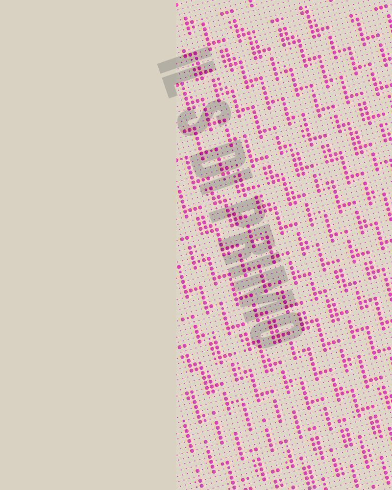

Giorno 187

Metodo verificare primo
ho letto "Primo (Light)"; "primo" non so cosa sia; mi sta vicino a giorno; nel suo significato c'è punto; ricerca "primo" (approfondire): Che forma ha primo?; sferzata: una parola sola, enorme, che esce dal foglio
Oggi: primo. Ho letto "Primo (Light)"; "primo" non so cosa sia; mi sta vicino a giorno; nel suo significato c'è punto; ricerca "primo" (approfondire): Che forma ha primo?; sferzata: una parola sola, enorme, che esce dal foglio.
Da Wikipedia: «en primo su geniuscom».
Ho tracciato col pennello, deforma, tolto un livello (2 volte), steso un pattern, cambiato la luce, ombra, spostato le cose, retino, sporcato di grana. Ho annullato 2 gesti dopo averli guardati.
Primo, che è unità di tempo. Giorno sidereo come unità di tempo. Primo risultato differenze.
Ha retto: Viene da: Primo (Light).
È caduto: Tradisce quello che credevo di cercare (20%).
come ne ho discusso con me stesso — la tengo
occhio (pro, 1.50): Parla soprattutto per punti: una lingua sola, chiara. — cade
memoria (contro, 0.10): La mano si ripete: deforma, pattern ancora una volta. — regge
conservatore (contro, 1.80): Tradisce quello che credevo di cercare (20%). — cade
intenzione (pro, 0.75): Viene da: Primo (Light). — regge
pubblico (contro, 1.66): Chi la guarda direbbe: "pasticcio". — cade
materia (pro, 1.00): Ha una pelle: si sente la materia. — cade

Primo, e dentro s
ho letto "Primo (Light)"; "primo" non so cosa sia; mi sta vicino a giorno; nel suo significato c'è punto; ricerca "primo" (approfondire): Che forma ha primo?; sferzata: una parola sola, enorme, che esce dal foglio; serie: varia la tavola precedente
Oggi: primo. Ho letto "Primo (Light)"; "primo" non so cosa sia; mi sta vicino a giorno; nel suo significato c'è punto; ricerca "primo" (approfondire): Che forma ha primo?; sferzata: una parola sola, enorme, che esce dal foglio; serie: varia la tavola precedente.
Da Wikipedia: «light pubblicato».
Ho tracciato col pennello, deforma, tolto un livello (2 volte), steso un pattern, cambiato la luce, ombra, spostato le cose (2 volte), retino, sporcato di grana, scritto, sfasa. Ho annullato 3 gesti dopo averli guardati.
Primo come n. Numero: n. Metodo verificare primo.
Ha retto: Tiene l'intenzione: "primo" si vede (luminosita, punti, centroY, densita, contrasto).
È caduto: La mano si ripete: deforma, pattern ancora una volta.
come ne ho discusso con me stesso — la tengo
formale (pro, 1.50): Il baricentro sta su un terzo: la composizione respira. — regge
formale (pro, 1.25): Fuori centro quanto basta: c'è una forza che tira. — regge
occhio (pro, 1.50): Parla soprattutto per punti: una lingua sola, chiara. — regge
occhio (pro, 1.25): Il vuoto (41%) lavora quanto il pieno. — regge
memoria (contro, 0.10): La mano si ripete: deforma, pattern ancora una volta. — cade
intenzione (pro, 2.00): Tiene l'intenzione: "primo" si vede (luminosita, punti, centroY, densita, contrasto). — regge
intenzione (pro, 0.75): Viene da: Primo (Light). — regge
coerenza (pro, 1.71): Parla con le tavole di prima su "primo": stessa famiglia, un passo più in là. — regge
formale (pro, 1.25): C'è una struttura: una cosa comanda e attorno c'è spazio. — regge
pubblico (pro, 1.00): Si legge: si capisce cosa sto facendo. — regge